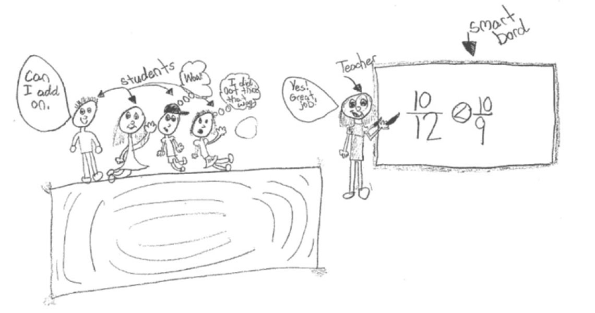
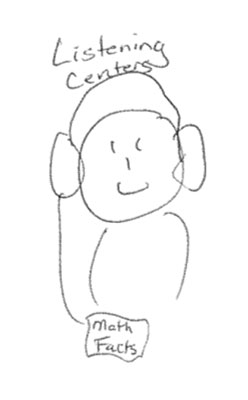

Drawing on Math
The Drawing on Math project was born out a year-long partnership between educational researcher Dr. Damian Bebell and Kristin Frang from the Muskegon Area School District (MI) Regional Mathematics and Science Center.
However, using students’ classroom drawings for research and reflection has a long and rich history across different subjects, students, and areas of focus. On these pages, we provide a summary of published research and resources for using drawings for research and reflection in the classroom.
The primary source for much of the work conducted and presented here is the 2004 article Drawing on Education published in the Harvard Educational Review. This article by Walt Haney, Mike Russell, and Damian Bebell includes a summary of the literature and methodological considerations for using across student drawings research. Drawing on Education Harvard Educational Review (PDF).
A deeper investigation into the long history of using student drawings for a wide variety of purposes and settings is further explored in the 2004 Annotated Drawing on Educational Bibliography Ann Tan and Walt Haney (2004). This bibliography collects and catalogues over 250 articles and resources assembled by Dr. Walt Haney though a generous grant from the Spencer Foundation. This bibliography represents a wide range of literature, including books, articles and dissertations, particularly concerning the use of drawings in education and schooling. Haney and Tan Annotated Bibliography (PDF).
Although much of the resources here pertain more directly to the K-12 math community, the use of drawings for research and reflection has not been limited to learners in K12 settings. Indeed, Dr. Larry Ludlow has used classroom drawings for self-reflection as a University Professor and statistics instructor throughout his career. The following papers and resources highlight Dr. Ludlow’s decade’s use of drawings for reflection and research:
- Faculty evaluations of teaching: A link between standardized ratings and student-centered drawings
- Faculty course evaluations: What is really going on in your class?
- Drawing Conclusions III: Using Student Drawings to Inform Teaching and Learning in a University Setting
- Drawing conclusions II: Using student drawings to inform teaching and learning in a university setting
- Drawing conclusions: Using student drawings to inform teaching and learning in a university setting


Additional educational research and evaluation studies that have used student drawings include:
Bebell, D., Clarkson, A., & Burraston, J. (2014). Cloud computing: Short term impacts of 1:1 computing in the sixth grade. Journal of Information Technology Education: Innovations in Practice, 13, 129-151. Retrieved from http://www.jite.org/documents/Vol13/JITEv13IIPp129-152Bebell0739.pdf
Bebell, D. & Burraston, J. (2014). Procedures and examples for examining a wide range of student outcomes from 1:1 student computing settings. Revista de curriculum y formacion del profesorado 8 (3). Retrieved from http://www.ugr.es/local/recfpro/rev183ART8en.pdf
Haney, W., Russell, M., Gulek, C. & Fierros, E. (Jan/Feb. 1998). Drawings on education: Using student drawings to promote middle school improvement. Schools in the Middle: Theory into Practice, 38-43.
Ludlow,L.H. & Bebell,D. (2003). Drawing conclusions: Using student drawings to inform teaching and learning in a university setting. Paper presented at the American Educational Research Association annual meeting. Chicago, IL. April 23, 2003.
Russell, M., Bebell, D., & Higgins, J. (2004). Laptop Learning: A comparison of teaching and learning in upper elementary equipped with shared carts of laptops and permanent 1:1 laptops. Journal of Educational Computing Research. 30(3), 313-330.
Russell, M., Bebell, D., Cowan, J. & Corbelli, M. (2003). An AlphaSmart for each student: Does teaching and learning change with full access to word processors? Computers and Composition. 20, 51-76.
Wheelock, A., Bebell, D., & Haney, W. (2000a). "What Can Student Drawings Tell Us About High-Stakes Testing in Massachusetts?" Teachers College Record. www.tcrecord.org
Wheelock, A., Bebell, D., & Haney, W. (2000b). Student self portraits as test-takers: variations, contextual differences, and assumptions about motivation. Teachers College Record. www.tcrecord.org
Research for Educators. Apple Inc. - Education, 2016. Free iBook featuring chapter on collecting and analyzing student classroom drawings: https://itunes.apple.com/us/book/research-for-educators/id1088992950?mt=11
The Drawing on Math project was born out a year-long partnership between educational researcher Dr. Damian Bebell and Kristin Frang from the Muskegon Area School District (MI) Regional Mathematics and Science Center.
This unique project encourages and assists educators in collecting and using students’ classroom drawings for fostering deeper and more empirical reflection. This website provides teachers and schools with resources for collecting, analyzing and using drawings from your students as a simple reflective and research tool. If you would like more information about this work please reach out to:
Project Director Kristin Frang
Mathematics Consultant
Muskegon Area ISD Regional Mathematics & Science Center.
1001 Wesley Avenue
Muskegon, MI 49442
kfrang@muskegonisd.org
twitter.com/kristinfrang
Research Director Dr. Damian Bebell
Reflective Educational Research
bebell@bc.edu

Muskegon Area Intermediate School District (MAISD)